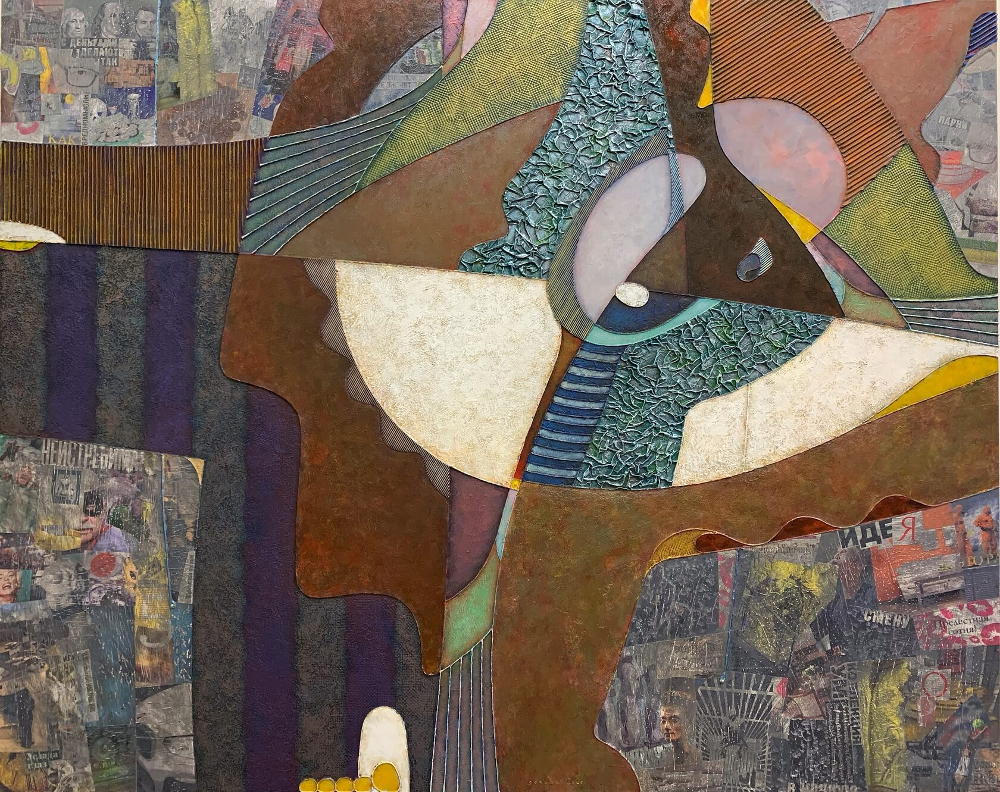

Произведение в разделе «Живопись и графика»
КОМЕДИАНТ. Серия ЛОГОС.
ТЕХНИКА: живопись, смешанная техника - контуры, акрил, мастики, акварель, аппликация, картон, металлические пудры.
ГОД: 2021.
РАЗМЕР: 200х160 см.
Жил был КОМЕДИАНТ. Он ходил по улицам Великого Города и веселил народ. Просто так. Его маленькие потешные представления были всегда забавны… ингода по-детски милы, иногда довольно остры… если он вдруг брался изображать наивных «многоглазых» приезжих (впрочем никогда не переходя невидимую грань между иронией и сарказмом).
И никто не обижался. Ведь он ненастоящий. Ненастоящий человек… и даже актёр ненастоящий. Накрашенное лицо, странная одежда, большие ботинки, белый бант и ещё, вот умора, слёзы на ниточке. Этакий Пьеро, Петрушка и Чаплин в одном флаконе.
Его неумело-гротесковые жесты и потешно-театральные экзальтации не оставляли у зрителей никаких сомнений как в несерьезности происходящего, так и в абсолютной бездарности этого городского сумасшедшего. В общем то, ну и пусть — думали люди, не всем же быть Нуриевыми и Смоктуновскими. Может и хорошо даже, что слёзы на ниточке, ведь своих на всех не хватит.
И вот однажды Комедиант пропал. Жители Великого Города даже не сразу заметили, что с улиц ушли Радость и Доброта. Ну как же это, ведь они не люди, чтобы взять и просто уйти?! Ведь не может же целый город, да ещё такой великий, «держаться» на одном уличном комедианте. Ну как же так?
И тогда, Великий Актёр, любимец богов и городская звезда, который частенько посмеивался над неумехой и бессеребреником Комедиантом, вышел на Мост, сел и… заплакал. Настоящими слезами. Он понял, куда много лет назад делся его старый учитель, тогдашний любимец публики, и почувствовал, что его больше нет.
А потом встал, накрасил лицо, надел странную одежду, смешные ботинки и пошёл в народ… делиться слезами… на ниточке…